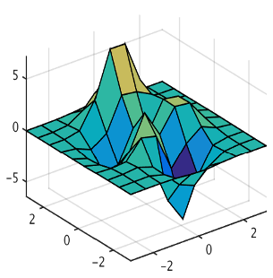

Vocal Responsive Lab Assistant
This project’s purpose was to create a responsive terminal that could help scientist with
basic chemical information on the fly without the need for typed commands. It was called
Bio Info and the result was a vocal and text based AI lab assistant designed with many
skills to help with lab prep, statistical analysis and chemical recognition. It is built
in Visual Studio.Net in C# and uses Pub Chem and Microsoft cognitive services API’s for
language and chemical information.
LCMS 3D Data Viewer

This Python project was designed to showcase the power of Mayavi and its 3D visualization tools as well as provide LCMS-(liquid chromatography mass spectrometry) data scientists in the Lab a quick in house tool for reading in and viewing their data. The data is shown in full 3D and after render there is usually zero delay on intractability.
AI/ML Model-Templates
This repository provides a comprehensive set of AI/ML templates for researchers, data scientists,
and developers who want to quickly get started with AI/ML projects. The templates are well-commented,
easy to understand, and ready to be used as a starting point for your projects in Clasification, NLP,
Nural Networks and even PCA.